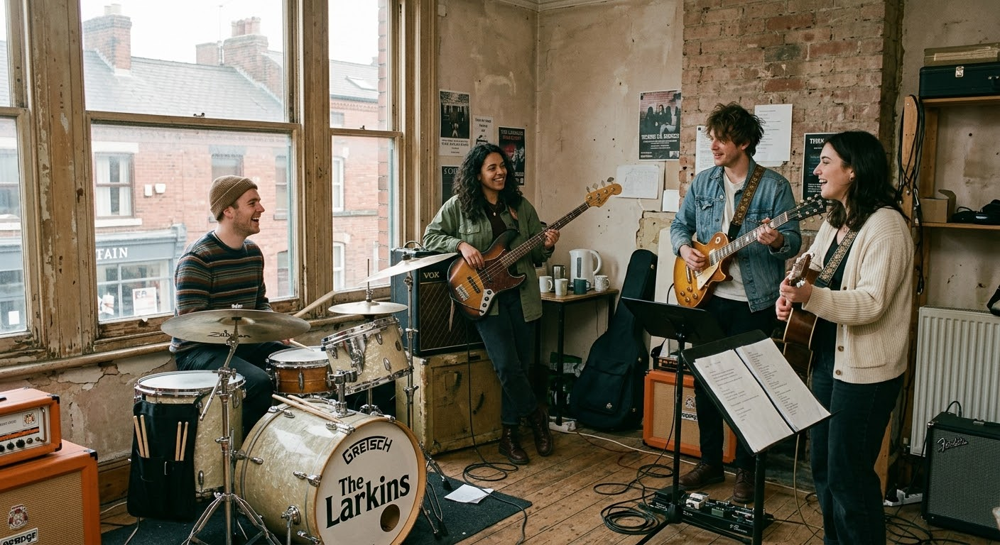
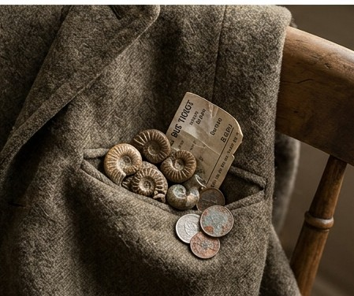
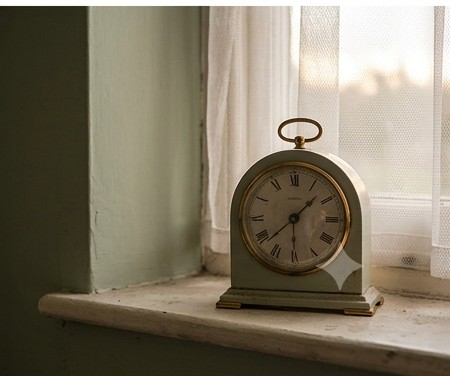

a record, read like a book
Some albums are photographs. This one is a pressed flower kept in a borrowed book — small, warm, easy to miss unless you’re looking.
Four voices out of Sheffield. Soft songs, old rooms.
Begin reading turn the pagechapter one
They started, as far as anyone can agree, in a kitchen in Crookes with a kettle that took twenty minutes and a guitar someone’s dad didn’t want anymore. Four of them, most weeks, though the lineup has a way of resettling itself like snow.
The songs came out soft before anyone decided they should — country changes, folk patience, something of the Beatles’ tunefulness and the Smiths’ way of making a small hurt sound like company. Nobody in the band would call it dad-rock to your face. Someone’s dad already did.
What they’re actually interested in: jugs, envelopes, rings left on windowsills, the fossil in the coat pocket you forget about until November. Small objects that have outlived a feeling. Sheffield weather, mostly. Tea, occasionally. Time, reluctantly, and only in the last song of any given set.
They rehearse in a room above a shop that used to sell prams. They are, by their own admission, not in a hurry.

Sheffield, ongoing.
chapter two
Ten quiet chapters. Rest your eye on a title and something small will surface beside it.
01
a band of gold, kept by the sink
02
a chipped jug on the windowsill
03
an envelope, still unopened

04
a small found thing, carried around

05
used sparingly, like the gold
not yet written — the last five
chapter three
A few dates, for illustration — nothing here is booked yet.